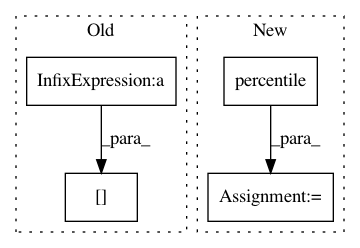

3227c2ed4ae92c6b9ecfc1b2c614ff4c36bd9fd0,lexos/processors/analyze/information.py,FileInformation,__init__,#FileInformation#,132
Before Change
// 2 iqr analysis
temp_list = sorted(list(word_list.items()), key=itemgetter(1))
mid = temp_list[int(num_word / 2)][1]
q3 = temp_list[int(num_word * 3 / 4)][1]
q1 = temp_list[int(num_word / 4)][1]
iqr = q3 - q1
After Change
// 2 iqr analysis
mid = np.median(word_list_values)
q1 = np.percentile(word_list_values, 25)
q3 = np.percentile(word_list_values, 75)
// pack the data
self.file_name = file_name
self.num_word = num_word
In pattern: SUPERPATTERN
Frequency: 3
Non-data size: 4
Instances
Project Name: WheatonCS/Lexos
Commit Name: 3227c2ed4ae92c6b9ecfc1b2c614ff4c36bd9fd0
Time: 2017-07-21
Author: weltch1997@gmail.com
File Name: lexos/processors/analyze/information.py
Class Name: FileInformation
Method Name: __init__
Project Name: astroML/astroML
Commit Name: b1402d88a210ddb402bee4189edd5bdb2ada8403
Time: 2019-01-02
Author: bsipocz@gmail.com
File Name: astroML/density_estimation/tests/test_hist_binwidth.py
Class Name:
Method Name: test_freedman_bin_width
Project Name: scikit-learn-contrib/imbalanced-learn
Commit Name: aa6af82f458acf3f853e5174d34b11d319eea1c0
Time: 2016-06-17
Author: victor.dvro@gmail.com
File Name: unbalanced_dataset/under_sampling/instance_hardness_threshold.py
Class Name: InstanceHardnessThreshold
Method Name: transform